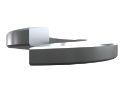
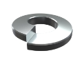

Пружинные шайбы (шайба Гровера)
Изготовление пружинных шайб на заказ партиями от 1-й штуки от 1-го дня.
Выполним по разнообразным параметрам, чертежам или образцу, фото, эскизу.
(сроки выполнения заказа обговариваются с каждым клиентом индивидуально)
- 
- 
Изготовление и производство пружинных шайб
Не знаете где заказать и купить пружинные шайбы? Производственная компания ООО «Индустриал Спрингс» предоставляет услуги по изготовлению пружинных шайб на заказ с последующей доставкой по всей территории Украины.
Пружинная шайба или шайба Гровера - круглая шайба, имеющая вид одного витка пружины, концы которой расположены в разных плоскостях. Основная цель использования пружинной шайбы - предотвращение самоотвинчивания резьбовых соединений за счет упругой деформации шайбы под нагрузкой. Шайбы Гровера являются незаменимой частью многих узлов и механизмов, которые подвергаются ударным и вибрационным нагрузкам, способствующие раскручиванию болтовых соединений.
Наши специалисты изготавливают пружинные шайбы в четырех вариантах:
- - Шайбы гроверные легкие с прямоугольным поперечным сечением;
- - Шайбы гроверные нормальные с квадратным поперечным сечением;
- - Шайбы гроверные тяжелые с квадратным поперечным сечением;
- - Шайбы гроверные особо тяжелые с квадратным поперечным сечением.
В производстве пружинных шайб используются высококачественные пружинные сплавы и стали (углеродистые, легированные, специальные теплостойкие и нержавеющие), а также специализированное профессиональное оборудование. “Индустриал Спрингс” проектирует и изготавливает пружинные шайбы, придерживаясь всем нормам ГОСТа, что позволяет сохранять все свойства изготавливаемого продукта на весь период эксплуатации.
Наша компания более 10 лет занимаемся производством изделий из пружинной проволоки любых видов, от стандартных до сложнейших образцов. У нас Вы можете купить пружинные шайбы по доступным оптовым и розничным ценам. При оформлении заявки на расчет и изготовление пружинных шайб необходимо проконсультироваться с нашими специалистами, для точного составления технического задания к Вашему заказу, где будут учтены все необходимые параметры. Для заказа свяжитесь с мененджером нашей компании через форму заявки или по одному из телефонов: 066 283 80 82, 097 305 81 85, 0532 591 590.